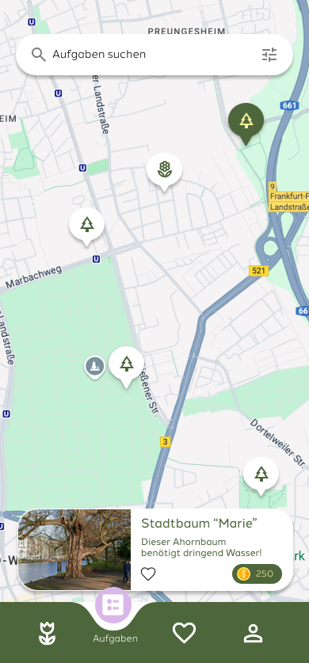
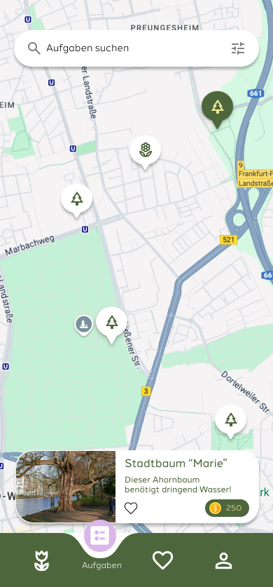
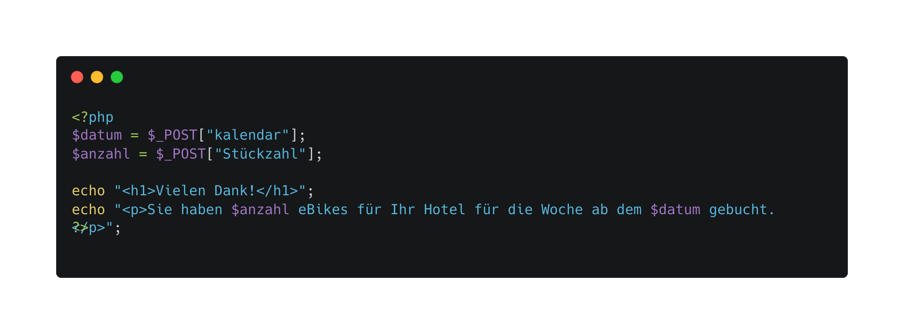
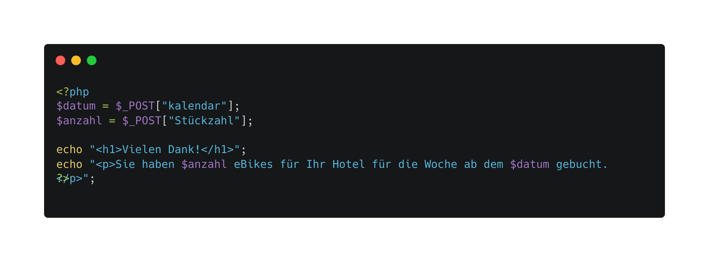

ist ein Projekt, das ich im Rahmen meines Studiums entwickelt habe. Es handelt sich um eine mobile App, die Bürgerinnen dazu motiviert, ihre Stadt grüner und nachhaltiger zu gestalten. Nutzerinnen können Stadtbäume und andere Pflanzen in ihrer Umgebung pflegen und erhalten dafür Münzen und eine digitale Pflanze für den eigenen virtuellen Garten als Belohnung. Diese Münzen lassen sich in Gutscheine umwandeln oder für das Pflanzen echter Bäume einsetzen. Ein besonderes Feature von Greenroute ist die AR-Wegbeschreibung, die Nutzer:innen direkt zu den Pflanzen in ihrer Nähe führt. Ziel der App ist es, Urban Gardening zugänglicher zu machen und die Gemeinschaft für den Erhalt städtischer Grünflächen zu begeistern. Bei der Entwicklung der App habe ich besonderen Wert auf ein nutzerfreundliches Interaktionsdesign gelegt und innovative Technologien wie Augmented Reality in den Alltag integriert. Dieses Projekt zeigt meine Fähigkeit, Design, Funktionalität und Nachhaltigkeit zu vereinen.


 

02
TouristBike
Ziel dieses Projekts war es, ein Konzept für eine E-Bike-Buchungsplattform für Hotels zu erstellen. Hierbei lag der Fokus auf der technischen Umsetzung mithilfe von HTML, CSS und PHP in einer lokalen XAMPP-Umgebung.

 
